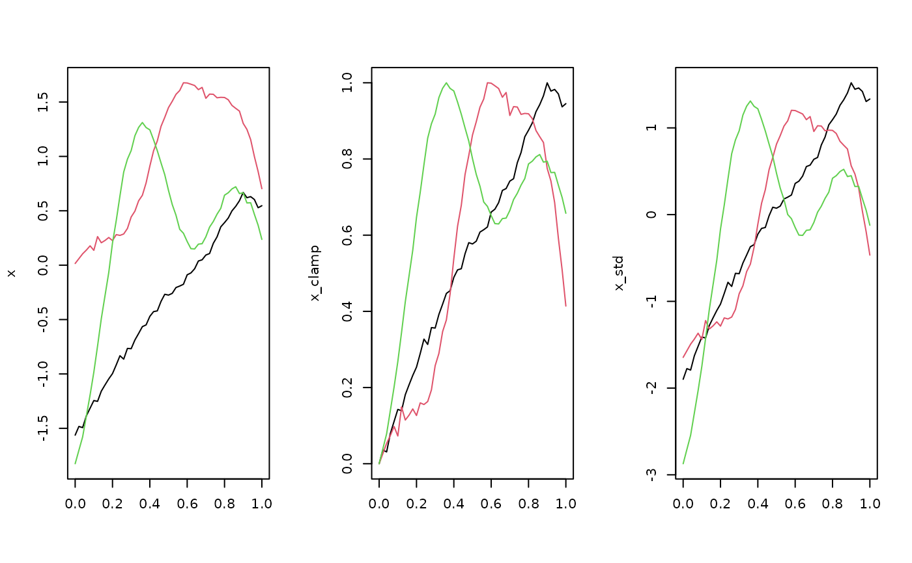

These functions extract (user-specified) function-wise summary statistics
from each entry in a tf-vector. To summarize a vector of functions at each
argument value, see ?tfsummaries. Note that these will tend to yield lots
of NAs for irregular tfd unless you set a tf_evaluator()-function
that does inter- and extrapolation for them beforehand.
Usage
tf_fwise(x, .f, arg = tf_arg(x), ...)
tf_fmax(x, arg = tf_arg(x), na.rm = FALSE)
tf_fmin(x, arg = tf_arg(x), na.rm = FALSE)
tf_fmedian(x, arg = tf_arg(x), na.rm = FALSE)
tf_frange(x, arg = tf_arg(x), na.rm = FALSE, finite = FALSE)
tf_fmean(x, arg = tf_arg(x))
tf_fvar(x, arg = tf_arg(x))
tf_fsd(x, arg = tf_arg(x))
tf_crosscov(x, y, arg = tf_arg(x))
tf_crosscor(x, y, arg = tf_arg(x))Arguments
- x
a
tfobject- .f
a function or formula that is applied to each entry of
x, seepurrr::as_mapper()and Details.- arg
defaults to standard argument values of
x- ...
additional arguments for
purrr::as_mapper()- na.rm
a logical indicating whether missing values should be removed.
- finite
logical, indicating if all non-finite elements should be omitted.
- y
a
tfobject
Details
tf_fwise turns x into a list of data.frames with columns arg
and values internally, so the function/formula in .f gets a data.frame
.x with these columns, see examples below or source code for tf_fmin(),
tf_fmax(), etc
Functions
tf_fwise(): User-specified function-wise summary statisticstf_fmax(): maximal value of each functiontf_fmin(): minimal value of each functiontf_fmedian(): median value of each functiontf_frange(): range of values of each functiontf_fmean(): mean of each function: \(\tfrac{1}{|T|}\int_T x_i(t) dt\)tf_fvar(): variance of each function: \(\tfrac{1}{|T|}\int_T (x_i(t) - \bar x(t))^2 dt\)tf_fsd(): standard deviation of each function: \(\sqrt{\tfrac{1}{|T|}\int_T (x_i(t) - \bar x(t))^2 dt}\)tf_crosscov(): cross-covariances between two functional vectors: \(\tfrac{1}{|T|}\int_T (x_i(t) - \bar x(t)) (y_i(t)-\bar y(t)) dt\)tf_crosscor(): cross-correlation between two functional vectors:tf_crosscov(x, y) / (tf_fsd(x) * tf_fsd(y))
See also
Other tidyfun summary functions:
tfsummaries
Examples
x <- tf_rgp(3)
layout(t(1:3))
plot(x, col = 1:3)
# each function's values to [0,1]:
x_clamp <- (x - tf_fmin(x)) / (tf_fmax(x) - tf_fmin(x))
plot(x_clamp, col = 1:3)
# standardize each function to have mean / integral 0 and sd 1:
x_std <- (x - tf_fmean(x)) / tf_fsd(x)
tf_fvar(x_std) == c(1, 1, 1)
#> 1 2 3
#> TRUE FALSE TRUE
plot(x_std, col = 1:3)

# Custom functions:
# 80%tiles of each function's values:
tf_fwise(x, ~ quantile(.x$value, .8)) |> unlist()
#> 1.80% 2.80% 3.80%
#> 0.3911169 1.5431315 0.8560247
# minimal value of each function for t >.5
tf_fwise(x, ~ min(.x$value[.x$arg > .5])) |> unlist()
#> 1 2 3
#> -0.2591620 0.7030887 0.1492651
tf_crosscor(x, -x)
#> 1 2 3
#> -1 -1 -1
tf_crosscov(x, x) == tf_fvar(x)
#> 1 2 3
#> TRUE TRUE TRUE